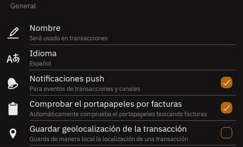
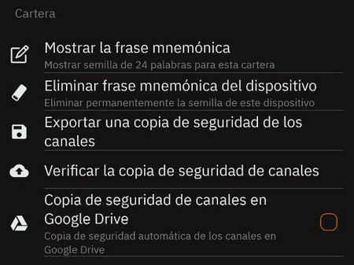
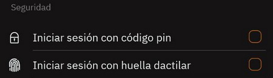
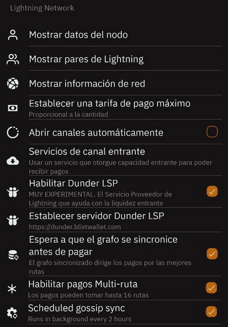
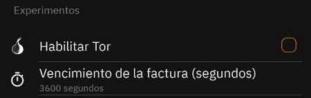
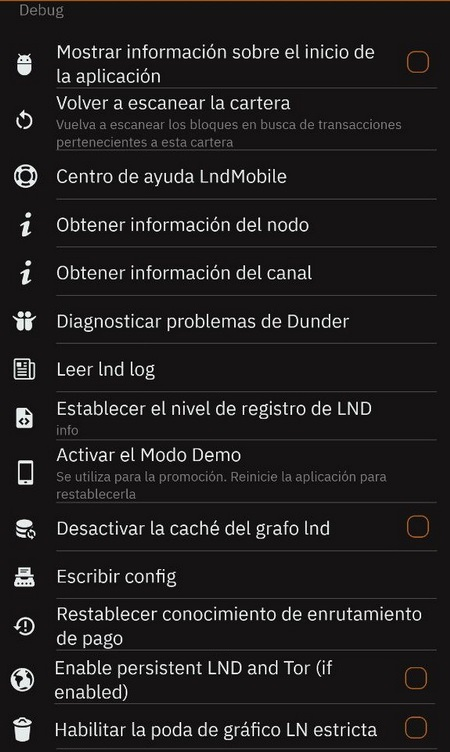
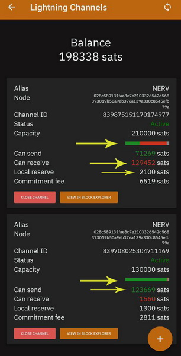

Tabla de contenido
Blixt Wallet contiene tres secciones principales, cada una con opciones, características y utilidades específicas.
La pantalla principal muestra la billetera Lightning directamente. LN es el uso principal de esta aplicación y se centrará en eso.
También los principales botones de acción: enviar y recibir, en la parte inferior de la pantalla.
El saldo que se muestra en la pantalla principal representa SOLAMENTE el saldo de la billetera Lightning.
Se muestra el saldo de la billetera en cadena en la otra sección de la aplicación (menú del cajón superior).
Razón por la que está ahí, puedes leer aquí.
Blixt Wallet Principales características
Nodo Neutrino
La aplicación Blixt se conecta de forma predeterminada a Blixt Server para sincronizar los bloques e índices de Bitcoin con
Neutrino
(BIP157),
pero el usuario también puede conectarse a su propio nodo Bitcoin.
Está sincronizando todos los bloques de Bitcoin (cabeceras y filtros) en menos de 5 min, respetando la privacidad del usuario.
La billetera no utiliza ningún servidor centralizado para realizar transacciones,
todas las transacciones se transmiten directamente desde su aplicación Blixt en la mempool de Bitcoin.
Una mención en este punto: la aplicación Blixt requerirá algo de espacio para esta sincronización en el dispositivo del usuario,
alrededor de 1 GB de datos, desde sincronización de bloques y gráfico LN (mapa de red).
Nodo completo LND sin custodia
El usuario puede administrar sus propios canales Lightning con una interfaz fácil y suficiente información
para tener una experiencia buena y fluida.
En el menú del cajón superior izquierdo, puede ir a los canales Lightning y comenzar a abrir con otros nodos, como desee.
Estos canales LN, por defecto, serán canales no anunciados (los llamados canales privados).
Eso significa que no será "visible" por otros nodos en el gráfico de la red, solo el par del nodo lo sabrá y
enrutará sus txs en consecuencia, a través de sus otros canales. Además, los canales privados NO enrutan otros pagos.
Así que prácticamente Blixt es un NODO PRIVADO, para ofrecerte el control total de tus vías de pago,
de forma privada, con los costes que tú decidas.
Así que elija sabiamente con qué nodo par abrirá canales LN para sus transacciones. También vale la pena mencionar que debe tener
al menos 2-3 canales LN abiertos en su Blixt para una mejor disponibilidad de rutas y aprovechando tambien para usar MPP
(Multi-Path Payment),
característica que también está disponible en Blixt.
Puedes consultar en el pagina FAQ para algunas recomendaciones de cómo y con quién puede abrir canales.
Monedero Bitcoin On-Chain
Esta característica está bastante oculta, porque no es el enfoque principal de esta aplicación.
Pero es fácil acceder a él desde el menú del cajón superior izquierdo.
Al no ser utilizado con tanta frecuencia por un usuario avanzado de LN, no es visible en primer lugar en la pantalla principal.
Pero está bien, puede tenerlo como un monedero separado donde puede administrar direcciones y ver el registro de txs.
En el futuro, también se podrían incluir más funcionalidades para esta billetera en cadena, como control de monedas,
RBF (reemplazar por tarifa), etc.
En este momento, el uso principal de este monedero onchain es administrar la apertura y el cierre de los canales de LN y
no como pagos regulares del día a día mediante transacciones en onchain.
Como puede ver en el registro de transacciones, se detalla el tipo de transacciones e indica para qué se usaron: (A) depósito, (B) canal abierto, (C) canal cerrado.
Vea una explicación más detallada sobre el uso de la billetera en cadena Blixt en la página de Guías.
Monedero Bitcoin Lightning
Esto se encuentra en la pantalla principal, como el uso principal de la aplicación.
El saldo que se muestra es solo para este monedero LN y NO contiene el saldo del monedero onchain.
Tiene una interfaz de función simple fácil de usar y ofrece todas las opciones necesarias para recibir y
enviar sats a través de Lightning Network.
El usuario puede cambiar fácilmente la unidad mostrada para el saldo, con un simple clic en el signo de la unidad.
También muestra el saldo en moneda fiduciaria local, según una tasa promedio.
Blixt Wallet Opciones (menú de configuración)
En esta sección, describiremos cada funcionalidad de Blixt Wallet que puede encontrar en el menú "Configuración", para una mejor comprensión.
Hay secciones específicas en este menú:
General | Monedero | Seguridad |
Visualización | Red Bitcoin | Red Lightning |
Varios | Experimentos | Debug
Sección General

Nombre
Esta opción ayudará al usuario a enviar un nombre específico en un pago, pero solo cuando se desee y sea necesario, es totalmente opcional.
Puede ser cualquier nombre y se almacena solo en el dispositivo.
Cuando esté listo para pagar una factura o enviarla a una dirección Lightning / LNURL, verá una casilla de verificación (desactivada de forma predeterminada)
donde puede optar por enviar ese nombre en la nota de factura. Esto podría ser muy útil a veces.
¡NO ES el alias del nodo LN! Blixt Wallet no usa alias de nodo, es un nodo LN privado.
Idioma
El idioma predeterminado es el Inglés. Otros idiomas disponibles son: español, alemán, francés, sueco, klingon, holandés, portugués, ruso, vietnamita.
Pronto más idiomas seran disponibles.
Notificaciones push
Esta es una función simple que notifica al usuario con mensajes sobre transacciones y eventos del canal,
cuando la aplicación está funcionando en segundo plano.
Consultar portapapeles para facturas
Esta opción, cuando está activada, comprobará automáticamente el portapapeles del dispositivo en busca de facturas y
cuando la aplicación esté abierta, aparecerá la pantalla de pago para una experiencia de usuario fácil y sencilla al realizar pagos.
Guardar geolocalización de la transacción
Herramienta muy útil, para agregar, de forma privada, para cada uno de sus pagos, una nota con una ubicación donde se ejecutó.
A veces, no puede recordar dónde estaba pagando y desea realizar un seguimiento de sus gastos.
Esta opción es totalmente opcional, por lo que si le preocupa su privacidad y/o su dispositivo podría ser robado y no lo protegió bien,
puede mantener deshabilitada esta opción. De todos modos, los datos se almacenan ÚNICAMENTE localmente en el dispositivo.
Sección de monedero

Mostrar mnemonic
Esta opción se usa para hacer una copia de seguridad de su semilla de billetera de 24 palabras.
Se puede acceder en cualquier momento, varias veces. ¡Guarda esas palabras en un lugar seguro!
¡Esto es serio, guarde la semilla inmediatamente después de crear la nueva billetera!
Eliminar mnemonic del dispositivo
Esta opción es una medida extra de seguridad, ya que luego de realizar la copia de seguridad
de tu semilla, puedes eliminarla totalmente de tu dispositivo.
Recuerda: ¡no uses esta opción si no haces la copia de seguridad primero!
Solo se puede usar en caso de que tenga miedo de que otra persona pueda robar, incautar o acceder accidentalmente a su dispositivo.
Quitar la semilla de su dispositivo no significa quitar la billetera y el nodo LN, son solo las palabras semilla.
El monedero funcionará normal como de costumbre.
Exportar copia de seguridad de los canales LN

Esta es una característica MUY IMPORTANTE para su Blixt Wallet. ¡No lo ignores!
Se usaría en el caso de emergencia y necesita recuperar los fondos que quedaron en los canales de LN.
Cuando se hace clic, indicará al usuario que seleccione una ubicación en su dispositivo para guardar
una copia de la base de datos de canales Blixt LN (SCB).
Después de guardarlo, se recomienda enfáticamente hacer una copia de ese archivo
(incluso alejarlo del dispositivo) en una ubicación más segura.
Mejor guarde una copia de este archivo junto con sus palabras clave de Blixt, bloqueadas en un administrador de contraseñas.
Haga esta copia de seguridad de exportación CADA vez que abra o cierre un canal. NO cada vez que haces una transacción.
Por lo tanto, no sería tan frecuente y podría tomar solo unos segundos guardarlo y alejarlo de su dispositivo.
El usuario también tiene la opción de guardar una copia de seguridad de los canales de Blixt en la unidad de Google
y/o en el almacenamiento local en su propio dispositivo móvil (luego mueva ese archivo a una ubicación segura, fuera de su dispositivo).
El procedimiento de restauración es bastante simple: inserte la semilla de 24 palabras,
agregue el archivo de respaldo (previamente copiado en la memoria móvil) y haga clic en restaurar.
Tomará algún tiempo sincronizar y escanear todos los bloques para sus txs en el pasado.
Los canales se cerrarán automáticamente y los fondos se devolverán a su billetera onchain
(consulte el menú del cajón en la parte superior izquierda - Onchain).
Lea más sobre cómo restaurar una billetera LND en Blixt en la pagina Blixt FAQ.
Sección de seguridad

Iniciar sesión con código PIN
Esta es una función de seguridad para agregar un número PIN cuando la aplicación está abierta y proteger su dispositivo
contra el acceso no autorizado. Se le pedirá al usuario 2 veces que establezca un PIN personal.
Ten en cuenta guardarlo (quizás junto con tu semilla) en un lugar seguro y no lo olvides.
La aplicación será imposible de abrir después de eso. La única forma de restaurarlo será a través de la restauración completa de Blixt Wallet
(semilla + canales. copia de seguridad) y reinstalar la aplicación. Eso implicará cerrar canales, tarifas, tiempo y posible estrés.
Iniciar sesión con huella dactilar
Esta característica de seguridad le pedirá al usuario que use su huella digital para poder abrir la aplicación Blixt
y protegerlo del acceso no autorizado.
Sección de visualización
Moneda Fiduciaria
El usuario puede configurar una moneda fiduciaria local y usarla para mostrarla como unidad principal en la billetera
o simplemente como valor opcional en la cantidad de bitcoin/satoshis.
La tasa se calcula en base a una tasa promedio de las principales bolsas y mercados.
Unidad Bitcoin
Esta opción le permite al usuario decidir cómo el saldo principal, las transacciones y los canales muestran las unidades de bitcoin (BTC, sats, etc.).
Explorador Onchain
Sirve para consultar transacciones en los diferentes exploradores de bloques disponibles. El valor predeterminado es mempool.space explorer.
El usuario puede elegir entre: Mempool, Blockstream, Oxt, Blockchair o personalizado (nodo propio, por ejemplo).
Transiciones de pantalla
Activar/desactivar una suave transición animada de pantallas usando Blixt.
Sección de la Red Bitcoin
Nodo Bitcoin
El usuario puede configurar un nodo de Bitcoin específico para sincronizar bloques,
puede ser su propio nodo o cualquier otro nodo de Bitcoin que admita BIP157 (sincronización de Neutrino).
De forma predeterminada, la aplicación Blixt Wallet ha configurado "node.blixtwallet.com",
pero también se puede dejar en blanco y se conectará con cualquier servidor disponible en la red.
La nueva versión de Blixt v0.6.x que viene con LND 0.15.x,
también es compatible con la dirección de onion Tor v3 para los nodos de Bitcoin.
Por lo tanto, puede usar su nodo de inicio personal que se ejecuta detrás de Tor y
no tiene configurado por dominio/IP de clearnet. O cualquier otro nodo privado.
Habilitar la recepción onchain a través de Taproot (P2TR)
Esta opción está disponible debido al soporte más nuevo en LND v0.15 para direcciones Taproot y Blixt lo admite solo desde v0.6.x en adelante.
Taproot (P2TR) es un nuevo conjunto de tipo de dirección para la dirección onchain de Bitcoin con nuevas funcionalidades y opciones de privacidad.
Lea más sobre Taproot aquí.
Sincronización de cadena programada
Esta opción viene activada por defecto y lo mejor es mantenerla así.
Ejecutará la sincronización de bloques de Neutrino cada 4 horas en segundo plano.
Si esta opción está deshabilitada, la sincronización de neutrinos solo es posible cuando la aplicación se ejecuta en primer plano.
Esto puede hacer que la sincronización de la cadena de bloques tarde más en el inicio de la aplicación si Blixt Wallet no se ha abierto en algún momento.
Nota: esta función no está disponible actualmente en iOS.
Sección Lightning Network

Mostrar datos del nodo
Esta es una sección importante donde se muestran más detalles sobre su nodo Blixt LN, muy útil y bueno para guardarlos para su uso posterior.
Tenga en cuenta que esta información no será "visible" en los exploradores públicos de LN, siendo Blixt un nodo y canales privados/no anunciados.
Esta información solo se puede utilizar en conexión directa con otros pares.
La información técnica mostrada será:
- Alias de nodo: ID abreviado para su nodo LN
- Cadena - red principal de bitcoin o red de prueba
- Mejor marca de tiempo del encabezado: cuándo se sincronizó el último bloque
- Block Hash - último número hash de bloque
- Block Height - último número de bloque que se sincronizó (Bitcoin Time)
- Identidad PubKey - la identificación completa de su nodo, utilizada para conectarse con otros pares. Esta es una información valiosa, téngala a mano.
- Num Channels - muestra el número total de canales que tiene en su nodo Blixt (activo, inactivo, pendiente)
- Num peers - el número total de pares que su nodo está conectado en ese momento.
Pares no significa exactamente cuántos canales tiene, podría ser más o menos, dependiendo de su tráfico.
- Sincronizado con la cadena - verdadero/falso que muestra el estado de sincronización en general de su nodo Blixt.
- Versión LND - muestra la versión del software del nodo LND que se utiliza en Blixt.
- Características del nodo - muestra las opciónes técnicas específicas activadas para su nodo.
Mostrar pares Lightning
Esta pantalla mostrará cada par de Lightning al que está conectado su Blixt, con más detalles técnicos para cada uno.
También ofrece la posibilidad de conectarse a otros pares haciendo clic en el botón "+" y escanear o agregar URI de pares.
Esta opción es útil cuando desea enrutar un pago a través de un nodo específico, enviar un pago keysend, desea abrir un canal con el,
o perdiste la conexión entre pares y quieres volver a conectarte.
Tenga en cuenta que si desea agregar pares que están detrás de Tor, primero deberá activar el
Opción Tor en la configuración de Blixt y reinicie la aplicación Blixt.
Mostrar información de red
Esta pantalla mostrará el estado del gráfico LN sincronizado por su nodo Blixt.
Es una muy buena información estadística para ver cómo se posiciona su nodo Blixt en toda la red.
Mostrará: capacidad total de la red, número de canales, número de nodos, tamaño promedio del canal, número de canales zombis.
Establecer tarifa máxima de pago
En esta opción, el usuario puede establecer su propio porcentaje de tarifa que está dispuesto a pagar.
Esta opción es muy útil en los casos en que un pago podría fallar debido a las altas tarifas de enrutamiento encontradas.
Proceda con precaución, por defecto es 2%, como tarifa máxima, puede aumentarla lentamente.
Canales abiertos automáticamente
Una característica básica de LND, que ofrece al usuario una forma sencilla de abrir automáticamente su primer canal LN.
De manera predeterminada, esta opción está habilitada para brindarle al usuario de Blixt por primera vez una manera fácil de abrir rápidamente un canal LN.
Esta es una buena característica para los nuevos usuarios que no saben mucho sobre con qué nodo y cómo abrir un canal LN.
Se puede desactivar, si el usuario desea otro método para abrir el primer canal LN.
Recuerda: esta opción se usa una sola vez, cuando creas tu nueva billetera Blixt y se activa.
Entonces, si el nuevo usuario, ve el código QR en cadena en la pantalla principal y deposita en esta dirección sus primeros sats,
Blixt abrirá automáticamente un canal con esos sats, con el nodo público de Blixt.
Después de esta función de uso por primera vez, la aplicación Blixt la ignorará y
el usuario tendrá que abrir manualmente nuevos canales LN o usar la función Dunder LSP.
Servicios de canal de entrada
Esta es una función dedicada especialmente para comerciantes o usuarios avanzados que necesitan más liquidez ENTRADA.
La liquidez entrante significa más espacio disponible en un canal LN para RECIBIR más sats.
Es fácil de usar, solo ve y actívalo, selecciona uno de los proveedores de liquidez en la lista, por el momento Thor Bitrefill y LNBIG,
pague la cantidad que desee por el canal y proporcione su nodoURI de cebolla Blixt Tor hacia el canal que estará abierto.
Habilitar Dunder LSP
Un servicio increíble que le permite comenzar a aceptar BTC a través de Lightning Network de inmediato,
sin necesidad de depositar primero fondos en la cadena para abrir un canal Lightning.
Para los nuevos usuarios, esta es una experiencia rápida y fácil porque pueden comenzar desde cero y recibir fondos directamente a través de Lightning Network.
El tamaño del canal abierto por Dunder LSP está sujeto a cambios según la demanda y la liquidez disponible.
Este es un servicio gratuito por ahora para facilitar la incorporación de nuevos usuarios y crear una experiencia perfecta para recibir fondos directamente a través de Lightning Network. La única tarifa que se cobra es la tarifa en cadena necesaria para abrir el canal de entrada.
Lea más sobre el desarrollo de Dunder LSP aquí.
Lea una guía más detallada sobre el uso de Dunder LSP en la página de guías de Blixt.
Establecer el servidor LSP de Dunder
En esta sección, el usuario puede configurar un servidor Dunder LSP personalizado, diferente al predeterminado dunder.blixtwallet.com.
Puede consultar en esta lista de la comunidad qué otros corredores de nodos podrían ofrecer estos servicios de canales de Dunder.< /p>
Espere la sincronización del mapa LN (graph) antes de pagar
Esta opción está deshabilitada por defecto y es bastante técnica.
Se usa principalmente cuando el usuario quiere tener rutas de pago óptimas específicas o quiere tener saltos claros en un pago.
Tenga en cuenta que activar esta opción podría provocar un inicio más lento y podría llevar más tiempo sincronizar el gráfico real.
antes de poder realizar un pago. Es mejor activarlo solo en momentos específicos cuando desea actualizar su caché de gráfico local
y quieres aclarar algunos viejos canales de zombis. Tenga en cuenta que podría llevar algo de tiempo,
así que verifique el estado en los registros de lnd.
Habilitar pagos de múltiples rutas
Una característica muy poderosa para una billetera LN. Cuando está habilitado, un pago más grande se divide en partes más pequeñas que pueden tomar varias rutas.
Esto utiliza la liquidez en los canales de manera más eficiente y puede ayudar a evitar que los pagos se atasquen debido a la falta de liquidez en una sola ruta para un pago mayor.
Esto está deshabilitado de forma predeterminada, pero es una buena idea usarlo, especialmente si desea realizar o recibir pagos más grandes.
Sincronización de gossip programados
Esta opción NO está activada de forma predeterminada, pero se recomienda para una sincronización de gráficos LN más rápida.
Ejecutará la sincronización de chismes de LN cada 2 horas en segundo plano.
Si esta opción está deshabilitada, la sincronización del gráfico LN solo es posible cuando la aplicación se ejecuta en primer plano.
Esto puede hacer que la sincronización de LN tarde más en el inicio de la aplicación si Blixt Wallet no se ha abierto en algún momento.
y, a veces, incluso podría desencadenar "pagos fallidos debido a que no hay rutas".
Sección Miscelánea
Sobre
Muestra los detalles más técnicos habituales sobre el desarrollador de Blixt, el software utilizado, la información de Github y las licencias.
Copiar el registro de la aplicación en el almacenamiento local
Esta opción le brinda al usuario una forma de exportar todos los registros de la aplicación a una carpeta seleccionada en el dispositivo local.
Más tarde, el archivo de registro (txt) podría consultarse o enviarse para su depuración al desarrollador o al equipo de soporte.
Copiar el registro de lnd en el almacenamiento local
Esta opción es muy útil para exportar y depurar los registros del nodo lnd a una carpeta seleccionada.
Una vez que se hace clic, se le pide al usuario que seleccione una carpeta de destino.
Más tarde, el archivo de registro (txt) podría consultarse o enviarse para su depuración al desarrollador o al equipo de soporte.
Ocultar facturas vencidas automáticamente
Esta opción eliminará las facturas que no se cumplieron y el usuario no desea mantenerlas visibles en la pantalla principal.
Pero si está probando los pagos y establece un tiempo más alto para vencer las facturas que creó,
puede reutilizar las facturas pendientes de pago anteriores de la lista.
Firmar mensaje con llave del monedero
Característica muy poderosa, que ofrece una forma de firmar mensajes o acciones específicas, utilizando la clave de billetera única como autenticador.
Esto podría tener varios casos de uso, desde validar una dirección de Bitcoin, iniciar sesión en un servicio web e incluso abrir la puerta de un hotel.
Habilitar la búsqueda de ruta bimodal
Esta es una característica bastante nueva de LND que ayuda a encontrar una mejor ruta de pago.
Lea más detalles sobre bimodal búsqueda de caminos aquí.
Sección de experimentos

Esta sección se denomina "experimentos" porque las opciones que se muestran aún están en desarrollo y
no se han probado por completo en condiciones de estrés y están en continuo cambio.
Por lo tanto, el usuario debe tener eso en cuenta y usarlos con precaución.
Habilitar Dunder LSP
LSP - Proveedor de servicios de liquidez
Un increíble servicio de funciones que ofrece al nuevo usuario la posibilidad de comenzar a aceptar BTC
a través de Lightning Network de inmediato, sin necesidad de depositar fondos en la cadena y luego abriendo canales LN.
Para los nuevos usuarios, esta es una experiencia rápida y fácil, porque se supone que pueden comenzar desde cero, directamente en LN.
En el futuro, Blixt puede modificar el tamaño de la apertura de un nuevo canal si hay demasiadas consultas.
Este es un servicio gratuito por ahora, para facilitar la incorporación de nuevos usuarios y hacer una experiencia perfecta directamente en Lightning Network.
Lea más sobre el desarrollo de Dunder LSP aquí.
Lea una guía más detallada sobre el uso de Dunder LSP en la página de guías de Blixt.
Habilitar Tor
Una vez activada, la aplicación Blixt se reiniciará usando la red Tor.
A partir de ese momento, puede ver en la configuración del menú: Información de nodo, su ID de nodo con una dirección onion,
para que otros nodos puedan abrir canales hacia tu pequeño nodo Blixt móvil.
O digamos que tiene su propio nodo en casa y quiere tener un canal con su nodo Blixt móvil.
Una combinación perfecta. Ver más detalles en la página de Guías Blixt.
Vencimiento de la factura
Esta opción es para cuando el usuario desea crear una factura LN específica con un tiempo de vencimiento específico (normalmente más largo).
El valor predeterminado es 3600 segundos.
Tenga en cuenta que usar un tiempo más largo para caducar no significa que pueda cerrar su Blixt Wallet para recibir esa factura,
aún necesita mantener abierta su aplicación Blixt, para mantener los canales en línea y su nodo Blixt accesible.
Sección de depuración

Mostrar notificaciones de información de inicio
Cuando está habilitado, las notificaciones aparecerán en la parte inferior de la pantalla después de iniciar Blixt Wallet mostrando el estado actual del proceso de inicio. Esto puede ser útil para depurar problemas de inicio.
Volver a escanear la billetera
Esta es una herramienta útil si parece que le faltan fondos en la billetera en cadena.
Una vez activado, Blixt Wallet debe reiniciarse. El proceso comenzará en el próximo inicio de Blixt Wallet y escaneará
todos los bloques para las direcciones de Bitcoin usadas, agregando cualquier transacción encontrada a la lista del historial de transacciones en la billetera en cadena. Este proceso puede llevar algún tiempo, así que tenga paciencia.
Centro de ayuda móvil de LND
Esta es una herramienta muy poderosa que se puede usar para diagnosticar, depurar y probar Blixt Wallet y el nodo lnd subyacente.
Se puede usar cuando el usuario está en contacto con el desarrollador de Blixt Wallet o soporte en Telegram para identificar posibles problemas.
Obtener información del nodo
Una herramienta sencilla para obtener más información sobre un nodo remoto. Debe proporcionar un ID de nodo.
Obtener información del canal
Una herramienta simple para obtener más información sobre un canal remoto para depurar su estado. Debe proporcionar un ID de canal.
Diagnosticar problemas de Dunder
Una herramienta de depuración simple para probar si un servidor Dunder está en línea y/o tiene fondos suficientes para abrir un canal Dunder.
Leer registro LND
Una herramienta para ver el registro de lnd para diagnosticar cualquier problema que pueda tener.
El registro también se puede copiar para enviarlo al desarrollador para una mayor depuración.
En general, se puede usar para verificar el proceso de inicio para asegurarse de que todo se vea bien y que la billetera se sincronice correctamente.
Establecer nivel de registro LND
Cambie el modo de visualización de los registros LND para centrarse mejor en la información que necesita (depuración, información, advertencia, error, crítica).
Activar modo de demostración
Una buena manera de probar Blixt Wallet con fines de demostración sin revelar la información real de la billetera.
Cuando se activa, Blixt Wallet estará en modo de demostración hasta que se reinicie.
Desactivar caché de gráfico lnd
Una herramienta de depuración para ayudar con un inicio más rápido y para diagnosticar posibles problemas. Se usa más con la ayuda del desarrollador de Blixt Wallet.
Desactivar caché de gráfico LND
Esta opción debe usarse solo con la supervisión de los desarrolladores de Blixt, solo en caso de problemas de depuración.
Escribir configuración
Esta opción se usa cuando el usuario hará cambios en la configuración del nodo lnd desde los menús avanzados.
Restablecer conocimiento de enrutamiento de pago
Herramienta útil que podría ayudar en caso de un pago fallido debido a que no se encontró la ruta.
Está borrando todas las rutas anteriores utilizadas en un pago y prueba una nueva ruta.
Habilitar LND persistente y Tor
Si está habilitado, el servicio lnd y Tor permanecerán persistentes en el dispositivo.
El usuario notará una notificación superior con respecto al servicio Blixt lnd.
No se notó un gran consumo de batería del dispositivo, pero los usuarios deben tener en cuenta que este servicio persistente podría usar más de lo habitual.
Se recomienda usar solo en los casos en que el nodo Blixt sea necesario para estar permanentemente en línea
y sincronizado y el dispositivo está conectado a una fuente de alimentación (por ejemplo, la tienda del comerciante).
Habilitar la poda de gráfico LN estricta
Tenga en cuenta: esta opción es solo para depuración y experimentación. Podría afectar drásticamente la búsqueda de la ruta de pago.
Úselo solo con la supervisión de los desarrolladores de Blixt.
Blixt Wallet Funciones (menú del cajón superior izquierdo)
Icono de estado de los canales
Una vez abierto el cajón superior, el usuario verá una pequeña ición en la parte superior derecha que indica el estado de los canales LN.
Esta es una herramienta muy útil para consultar antes de realizar un pago.
A veces, los usuarios tienen prisa o no usaron su billetera Blixt durante algún tiempo y simplemente la abrieron para pagar rápidamente. Es normal, todos hacemos eso.
Pero Blixt se preocupa por sus usuarios y agregó un pequeño ícono especial en el cajón superior, junto al logotipo,
como una simple bombilla indicadora, cambiando los colores, indicando el estado de los canales LN, si están listos, en espera u operativos.
Rojo: los canales están fuera de línea | Amarillo - puesta en marcha | Verde: los canales están listos, activos
Pegar desde el portapapeles
Un botón de acción simple que puede pegar una factura desde el portapapeles para pagar.
Aparecerá la pantalla de pago con los detalles de la factura ya completados y el usuario solo tiene que presionar el botón "enviar".
Enviar a Lightning Address
Potente función de monedero Blixt, integrando pagos a Lightning Address.
El usuario puede pegar o escribir una dirección de rayo y también puede guardarla en la lista de contactos.
Blixt ha implementado soporte completo para Protocolo LNURL,
Los usuarios de Blixt pueden pagar, retirar y autenticarse usando LNURL dentro de la billetera Blixt.
También está previsto tener una dirección Blixt Lightning a través de una nueva función (en desarrollo) "Lightning Box".
Función útil si quieres tener una lista estable de destinos donde vas a pagar la mayor parte del tiempo.
Esta lista de contactos puede ser LNURL, Lightning Address o futuras facturas/información de pago estática.
Por el momento no se puede hacer una copia de seguridad de esta lista, pero hay planes para tener una opción para exportarla y también con más opciones.
Una forma interesante de agregar un contacto es directamente desde la pantalla modal de detalles de pago:
Lightning Browser
WebLN - es una biblioteca y un conjunto de especificaciones para aplicaciones Lightning
y proveedores de clientes para facilitar la comunicación entre aplicaciones y usuarios de nodos lightning de forma segura.
Blixt ofrece una serie de servicios LN de terceros, organizados juntos en un navegador agradable, simple, accesible y bastante útil.
También es una buena manera de promover negocios que aceptan BTC sobre LN. Esta es una característica que se desarrollará más en el futuro.
Por el momento no funciona detrás de Tor, por lo que navegar por estas aplicaciones será en clearnet.
Monedero On-chain
Función dedicada para operar solo la parte en cadena de la billetera Blixt.
La pantalla principal mostrará el saldo en cadena y un código QR y una dirección BTC que se puede usar para depositar.
En la parte superior derecha, puede hacer clic en el botón de la lista de transacciones para consultar todas las transacciones pasadas en onchain.
Puede abrir cada uno para ver más detalles, txid, etc.
Esta función se utiliza principalmente para depositar fondos y luego consultar las transacciones de los canales de apertura y cierre.
Canales Lightning
Esta opción abrirá una pantalla que contiene toda la información sobre los canales Lightning que están abiertos en su Blixt Wallet.
Aquí puede abrir y cerrar canales de LN, revisar el estado de cada uno y ver los fondos disponibles por canal.

Como puedes ver en esta imagen, la barra del canal indica 3 colores:
- Verde: representa la liquidez saliente, cantidad "puede enviar"
- Rojo: representa la liquidez entrante, cantidad "puede recibir"
- Gris: representa la cantidad de "reserva local" + "tarifa de compromiso"
Tenga en cuenta que la "tarifa de compromiso" puede variar con el tiempo, dependiendo de las tarifas en cadena de mempool para los HTLC.
Experimento Keysend
Para mostrar esta función, el usuario debe hacer clic en el subcajón "Avanzado".
Función muy poderosa que pocas otras billeteras móviles tienen.
Puede enviar / empujar fondos directamente a través de un canal de pares o apuntado a otro nodo, agregando un mensaje si es necesario.
Keysend no requiere que se genere ninguna factura LN previa, así que tenga en cuenta que una vez que se envían los fondos,
el usuario no puede tener ninguna otra prueba, solo el hash secreto de su propio registro de transacciones.
Para un pago de envío de llaves entre 2 pares, este pago es totalmente privado.
Ver más detalles sobre la función de keysend en la página FAQ.
Esta función es muy útil para enviar mensajes pagos a través de LN,
publicar mensajes en Amboss.space Billboard
(aquí hay una guía sobre cómo usar esa cartelera de Amboss).
Lightning Box
En esta nueva sección, que se introdujo en el V0.6.9-420, encontrará su box.
Lightning Box le ofrecerá tener una dirección Lightning especial como user@blixtwallet.com o cualquier otro dominio, si lo ejecuta en su propio servidor.
Lightning Box es un proveedor de direcciones Lightning de código abierto para nodos móviles como Blixt Wallet, permitiéndole recibir una dirección Lightning
pagos directamente a su teléfono. Esto funciona junto con el modo persistente lamnzado en V0.6.9, que permite
manténerse activo en el fondo para recibir pagos. También puede usar esto para la propina Nostr.
Registre su propia dirección Lightning en el menú izquierdo -> Avanzado -> Lightning Box.
Lightning Box es un software de código abierto y puede ejecutar su propia instancia, trabajando sin problemas con Blixt Wallet.
Se puede encontrar un borrador de especificación para el protocolo aquí .
El proyecto Blixt aloja un servicio de caja de rayos para @blixtwallet.com escribe direcciones Lightning.
En el futuro veremos el soporte de la Lightning Box sin usar el modo persistente y para otras plataformas que Android.
Aquí puede ver un video de demostración cómo configurar su Lightning Box
con una Lightning Address deseada de su billetera Blixt.
"Huevos de Pascua / Acción de Dios Blixt"
Sí, dentro de la aplicación Blixt, hay características ocultas, pequeñas cosas que hacen que la aplicación sea agradable,
activando acciones interesantes y respuestas Sugerencia: pruebe a hacer clic dos veces en el logotipo de Blixt en el cajón :)
Le permitirá descubrir todo el resto.
La "Acción de Dios Blixt" se puede activar con una pulsación larga en un texto específico o una opción dentro de la aplicación.
Esa acción activará "ModoDios" en Blixt y mostrará más acciones, como copiar el texto, acciones ocultas o ventanas emergentes.